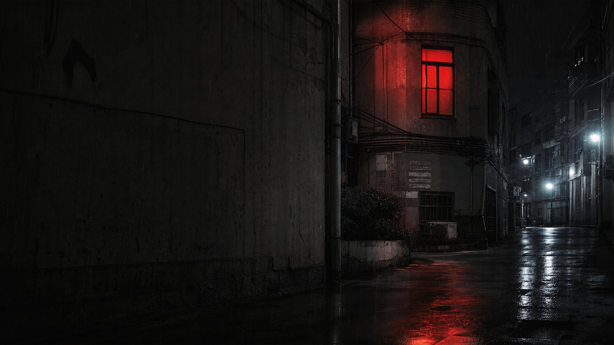

사진 속 인물과 기억 속 인물이 서로 다른 이름을 가진다.

03:33 / PRIVATE RECOVERY INDEX / READER MISMATCH
열람자는 기록보다 늦게 도착합니다
붉은 창문 보관소는 사라진 사람보다 먼저 남은 사진, 존재하지 않는 방, 열람 전에 댓글이 붙은 문서를 격리합니다. 기록 작성은 관리자에게만 열려 있습니다.
03:33:00 forbidden room opened without request
03:33:01 visitor name: unavailable
03:33:01 last image contains current room
열람자 상태 확인
- 이름
- 확인 불가
- 얼굴
- 불일치
- 목소리
- 녹음 중
- 그림자
- 중복
- 기억
- 최근 수정됨
- 권한
- 읽기 전용
입력하기 전에 이미 결과가 선택되었습니다.
SHORT HORROR
짧게 읽는 괴담
긴 기록을 읽기 전, 분위기를 잡는 짧은 괴담입니다. 각 항목은 한 화면 안에서 끝납니다.
REPORTED ANECDOTES
실제 일화처럼 접수된 기록
제보자의 말투와 현장 메모를 살린 짧은 일화형 기록입니다. 문서화 전 단계라 빠르게 훑기 좋습니다.
ADMIN DREAM LOG
관리자가 오늘 꾼 꿈
관리자만 올릴 수 있는 꿈 기록입니다. 꿈 내용과 이미지는 관리자 페이지에서 등록됩니다.
LONG FORM RECORDS
길게 읽는 복원 게시글
이미지와 본문을 갖춘 긴 게시글입니다. 카드를 선택해 미리 보고, 전문은 상세 페이지에서 읽습니다.
LIVE FILTER
0 records responding
복원 이미지 보관함
사진은 증거가 아니라 입구입니다
IMAGE ONLY VAULT
설명 없이 남겨진 사진
이 구역의 이미지는 아직 기록 문서로 분류되지 않았습니다. 제목과 설명은 보관소가 임시로 붙인 식별자이며, 사진 자체가 먼저 발견된 항목입니다.
내부 분류 기준
믿고 있는 것들이 망가지는 방식
평면도에 없는 방, 계단, 창문이 촬영본에만 남는다.
본문보다 댓글, 원본보다 복사본, 제보보다 답장이 먼저 도착한다.
모두가 기억하는 사람을 사진만 기억하지 못한다.
삭제 요청 1건 이후 본문이 314자 늘어난다.
문서를 오래 본 사람의 방 안에 같은 창문이 생긴다.
선명해질수록 사건의 위치가 현재 주소에 가까워진다.
운영 공지
이 사이트는 공개 제보를 받지 않습니다
기록 작성
관리자 전용
새 글, 이미지 업로드, 삭제는 관리자 페이지에서만 가능합니다.열람자 제한
- 공개 화면은 읽기만 가능합니다.
- 방문자는 글을 올릴 수 없습니다.
- 관리자 데이터는 이 브라우저에 저장됩니다.
복원 상태
접수됨
검열 중
부분 복원
공개됨
격리됨
삭제 표시